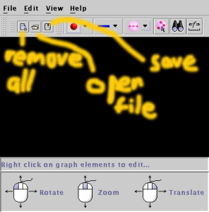

Back to contents page
Files and other miscellaneous operations
Graphs can be saved to a human readable XML format. The definition
for this file format can be found in $WILMA_HOME/data/WilmaGraph.dtd.
The three buttons in the top left of the tool bar are respectively:

- Remove All: or clear all graph elements
- Open file: prompts you with a file selection dialog and then opens
up the saved graph.
- Save: saves the graph to a file.
These operations are also available from the File menu.
Back to contents
page